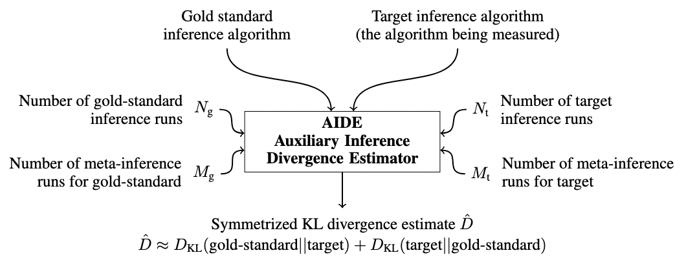
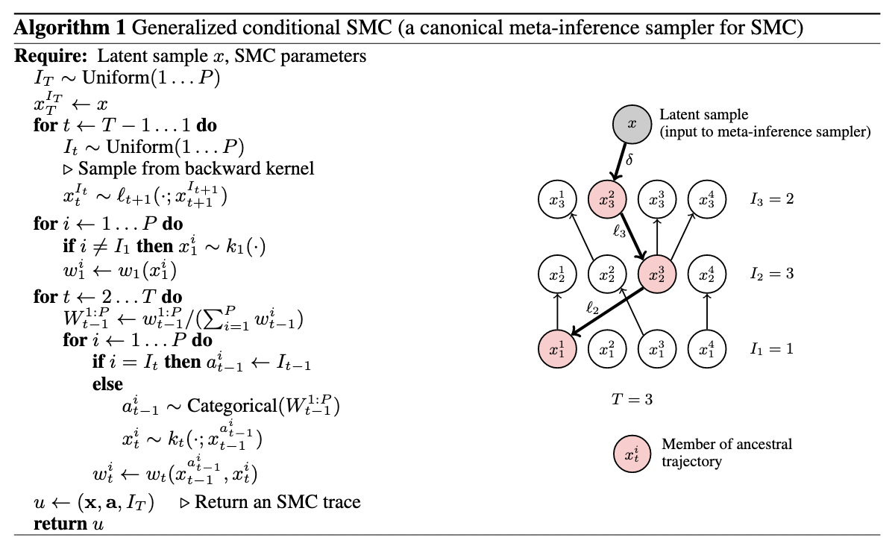
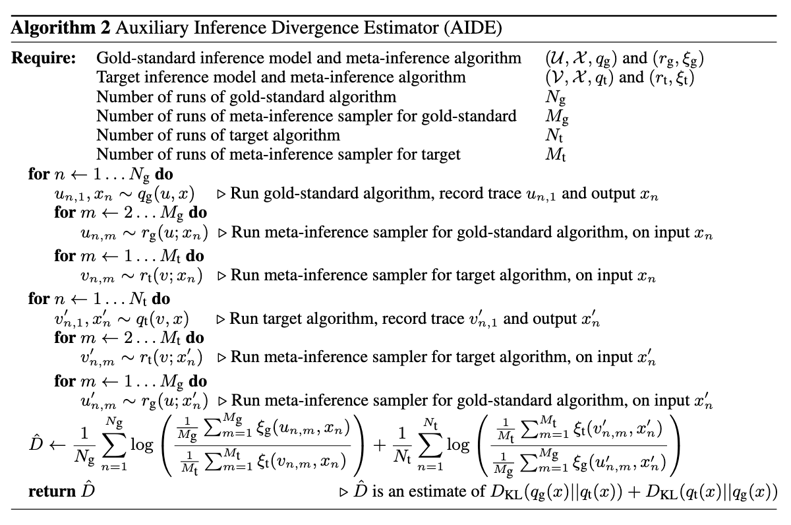

AIDE is a technique for measuring the accuracy of probabilistic inference algorithms by computing an estimator for the symmetric Kullback-Leibler (KL) divergence between the approximating distributions of two inference algorithms.
In this note, I’ll be working through the paper - attempting to provide informal context where necessary.
First, some background. In approximate Bayesian inference, the goal is to compute an approximation of the posterior that converges to the true posterior in some limit of computation. In Monte Carlo (importance) sampling, for example, the limit may be the number of samples. In Markov chain Monte Carlo (MCMC), this limit is the number of transition steps.
Often times, these limits are framed by considering an expectation taken with respect to the target distribution, e.g.
These algorithms are configurable.
In importance sampling, the user can provide a proposal distribution which the algorithm will sample from (but the proposal must cover the support of the posterior). Intuitively, the closer the proposal is to the true posterior, the smaller the number of samples required to reduce the variance to a specified tolerance. So the choice of proposal distribution has ramifications for the amount of computation required to estimate the expectation. The theoretical “best” proposal distribution requires only a single sample - in practice, usage almost always necessitates taking a number of samples and computating the expectation using a weighted average. A good reference here on proposals, variance bounds, and computation is Chatterjee and Diaconis, 2018.
A similar characterization is true for MCMC, where the user can provide a kernel (which must satisfy a property called detailed balance with respect to the target distribution to ensure that the Markov chain targets the correct distribution). The computational limit parameter in question is the length of the Markov chain.
Often times, categorization of these algorithms discuss these explicit parameters in great detail - but in practice, there are also implicit computational costs which must be considered when designing custom inference algorithms. In importance sampling, sampling from the proposal distribution and evaluation of log-likelihood functions are two computational processes which are effectively involved in every sampling step. In MCMC, sampling from the kernel and evaluation of the accept-reject ratio are involved in every step.
These implicit costs must be considered in the practical design of inference - e.g. an algorithm which theoretically converges quickly may practically be unacceptable under computational restrictions. In many practical cases of Bayesian inference, effective algorithms which are known to be empirically successful from the literature will be run for a restricted number of steps. In MCMC, for example, this induces accuracy penalties against the true posterior. So the goal, really, is not choosing an algorithm by comparing behavior in the theoretical
AIDE is a technique which seeks to address part of this design problem.

One important thing to understand is that AIDE sits within a conceptual framework for probabilistic and inference programming developed by (Marco Cusumano-Towner et al) called Gen. The paper is full of terminology which overlaps with this project - including things like traces and generative functions.
In particular, the way that AIDE is applied to inference algorithms is by framing them as generative inference models - generative models (whose mathematical background is covered in great depth in Marco’s thesis) which return the output density of the inference algorithm when marginalized over internal random choices. This choice essentially motivates what follows - the difficulty of computing densities of inference algorithms occurs because it is difficult to marginalize over internal random choices of the algorithm. The authors specify: let’s treat inference algorithms as generative models, and then use techniques from marginal likelihood estimation in a Monte Carlo estimator of divergence between output distributions of the two algorithms.
A tuple
For a given generative inference model
The interface to meta-inference algorithms requires the ability to sample
(c.f. section 3.1 of the paper) Conceptually, a meta-inference sampler tries to answer the question “how could my inference algorithm have produced this output
Note that if it is tractable to evaluate the marginal likelihood
So, what exactly does a generative inference model and meta-inference algorithm look like?
The authors present a meta-inference algorithm for SMC (which I discuss a bit more in

A key part of AIDE is the usage of the symmetrized KL divergence as a measure of difference between distributions. The KL divergence is defined as
which is not a metric, although it satisfies some properties of metrics, like
